Fish are born, they grow, they reproduce and they die – whether from natural causes or from fishing. That’s it. Modelers just use complicated (or not so complicated) math to iron out the details. Cooper (2006)
Equilibrium based yield per recruit methods (Walters and Martell 2004) estimate the capture rate that optimizes the yield under the assumption that there is no stochasticity and all density-dependence is captured by the stock-recruitment relationship. The remaining population processes of growth, reproduction and death are captured through a series of relatively straight-forward deterministic equations.
In ypr length (in cm) at age (\(t\)) is assumed to follow a Von Bertalanffy growth curve
\[L = L_{\infty} \cdot (1 - \exp(-k \cdot (t-t_0)))\]
library(ypr)
population <- ypr_population(Linf = 100, k = 0.2, t0 = 0)
ypr_plot_schedule(population, "Age", "Length")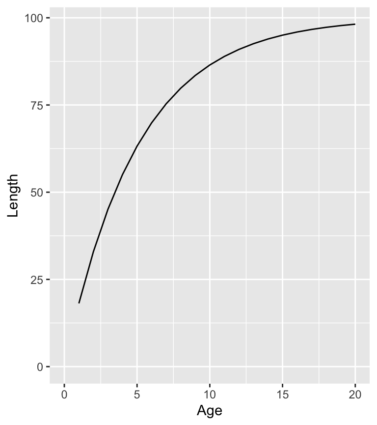
The weight (\(W\)) at a given length is assumed to follow the classic allometric relationship
\[W = w_\alpha \cdot L^{w_\beta}\]
population <- ypr_population_update(population, Wa = 0.01, Wb = 3)
ypr_plot_schedule(population, "Length", "Weight")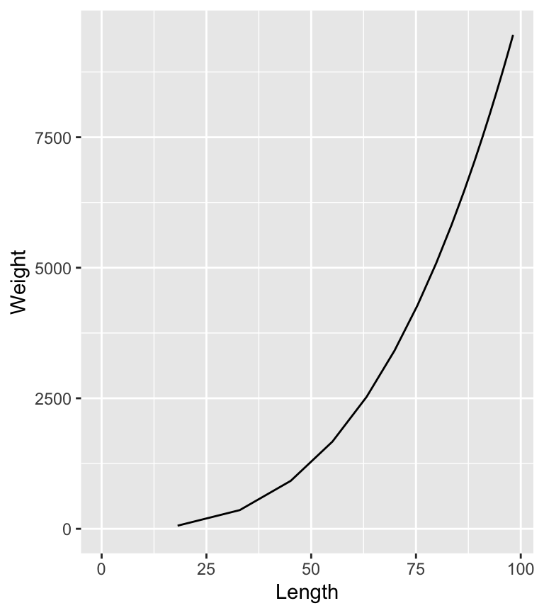
Its worth noting that \(w_\alpha\), which is the extrapolated weight (g) of a 1 cm individual, is a scaling constant that only affects the estimate of the yield (when calculated in terms of the biomass), ie, it does not affect the estimate of the optimal capture rate.
The fecundity (\(F\)) is assumed to scale allometrically with the weight according to the equation
\[F = f_\alpha \cdot W^{f_\beta}\]
population <- ypr_population_update(population, fa = 1, fb = 1)
ypr_plot_schedule(population, "Weight", "Fecundity")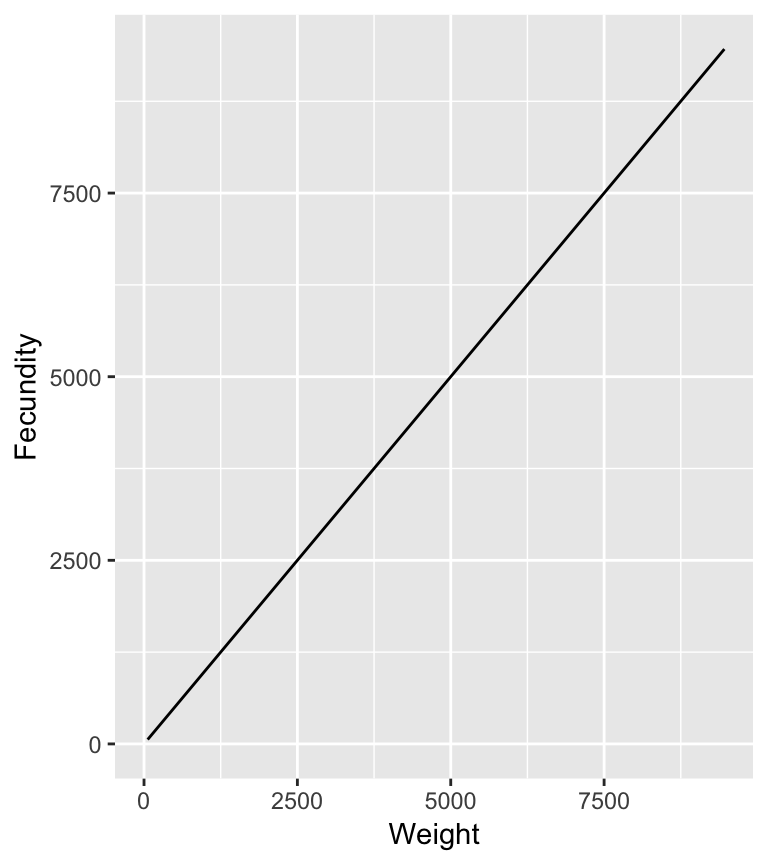
\(f_\alpha\), which is the extrapolated eggs produced by a 1 g female, is a scaling constant with no effect on the yield or optimal capture rate.
The probability of spawning at length \(L\) is determined by the equation
\[S = \frac{L^{S_p}}{L_s^{S_p} + L^{S_p}} \cdot es\]
population <- ypr_population_update(population, Ls = 50, Sp = 10, es = 0.8)
ypr_plot_schedule(population, "Length", "Spawning")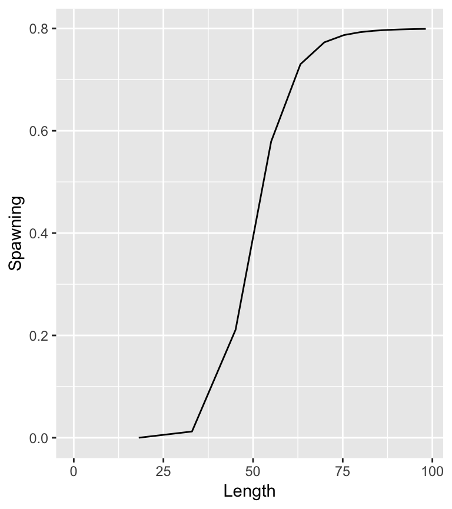
The annual interval natural mortality rate is assumed to vary by length according to the equation
\[ N = 1 - \exp(-M \cdot L^{M_\beta})\]
population <- ypr_population_update(population, M = 0.2, Mb = -0.5)
ypr_plot_schedule(population, "Length", "NaturalMortality")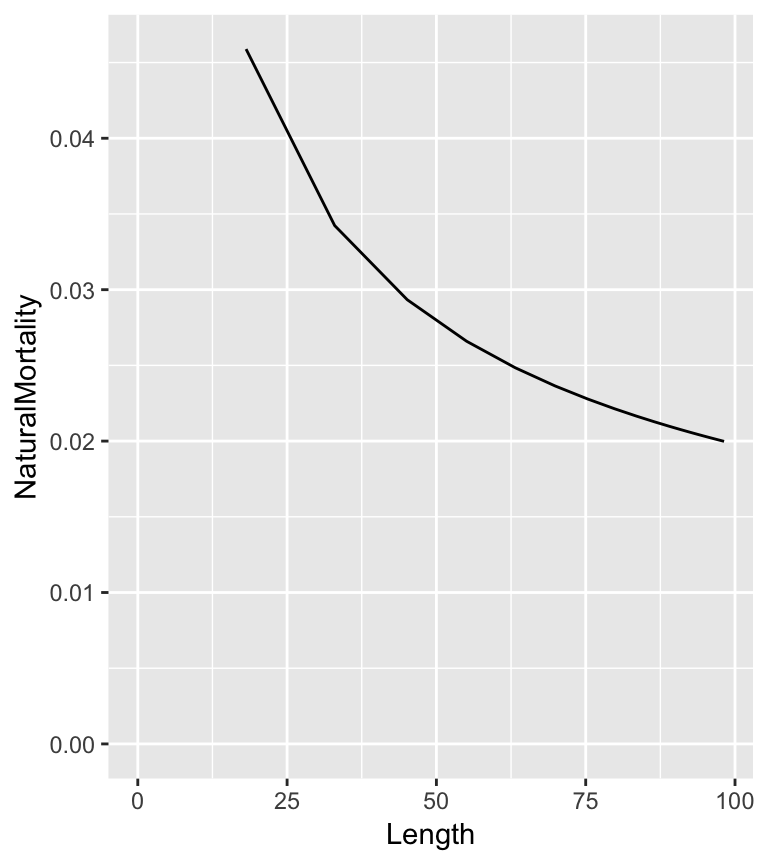
where \(M\) is the annual instantaneous natural mortality rate.
The natural mortality rate can also be affected by spawning mortality
population <- ypr_population_update(population, Sm = 0.5)
ypr_plot_schedule(population, "Length", "NaturalMortality")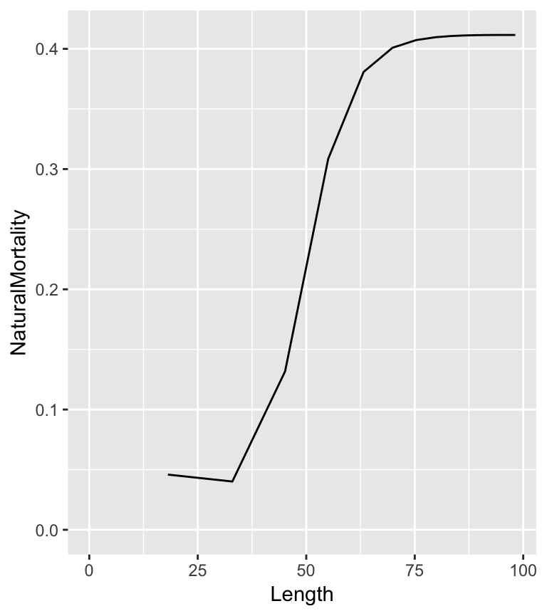
The vulnerability to capture (\(V\)) is assumed to vary by length as follows
\[V = \frac{L^{V_p}}{L_v^{V_p} + L^{V_p}}\]
population <- ypr_population_update(population, Lv = 50, Vp = 50)
ypr_plot_schedule(population, "Length", "Vulnerability")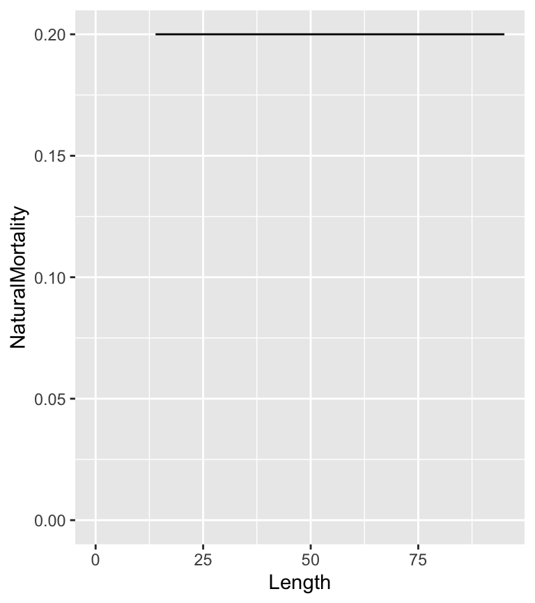
If \(V_p\) is 100 then vulnerability is effectively knife-edged.
The probabilty of being retained if captured (\(R\)) depends on the release rate (\(\rho\)), the slot limits (\(L_{lo}\) and \(L_{up}\)) and the non-compliance with the limits (\(N_c\))
population <- ypr_population_update(population, rho = 0.5, Llo = 40, Lup = 70, Nc = 0.1)
ypr_plot_schedule(population, "Length", "Retention")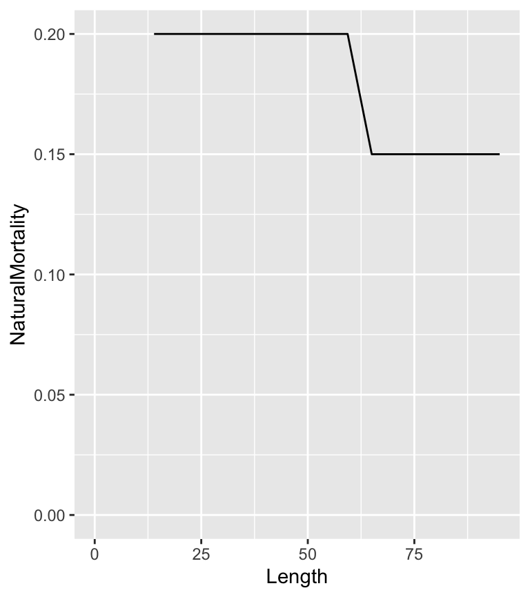
The fishing mortality (\(U\)) depends on \(V\), \(R\) and the probability of capture when fully vulnerable (\(pi\)) as well as the hooking mortality (\(H_m\))
\[U = V \cdot \pi \cdot R + V \cdot \pi \cdot (1 - R) \cdot H_m\]
The calculation assumes that a released fish cannot be recaught in the same year.
population <- ypr_population_update(population, pi = 0.3, Hm = 0.2)
ypr_plot_schedule(population, "Length", "FishingMortality")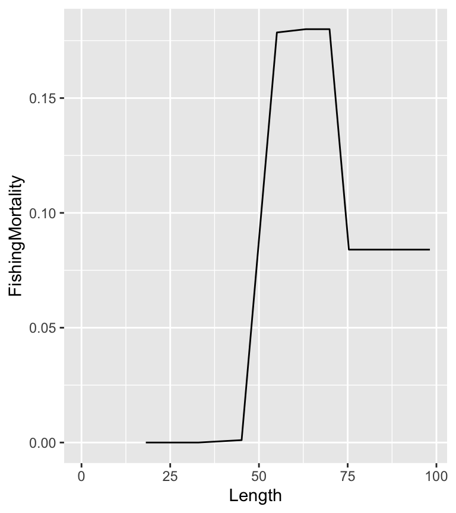
With growth, reproduction and death defined, the final task is to estimate the recruitment (birth) rate.
This requires the number of spawners per spawner at low density (\(R_k\)) and the recruitment age (\(R_t\); by default 1) to be defined.
If recruitment follows a Beverton-Holt (\(BH = 1\)) curve then
\[R = \alpha \cdot S / (\beta \cdot S + 1)\]
population <- ypr_population_update(population, Rk = 3)
ypr_plot_sr(population, plot_values = FALSE)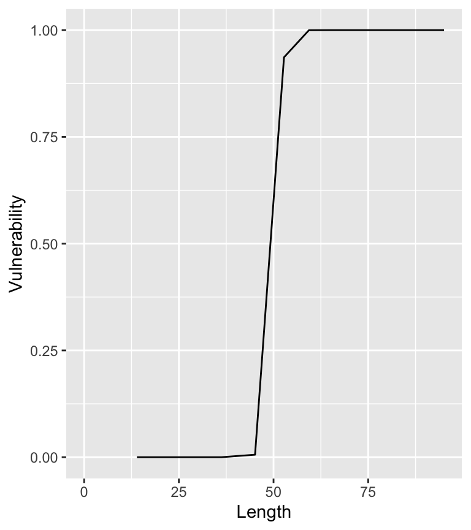
otherwise with a Ricker curver (\(BH = 0\))
\[R = \alpha \cdot S \cdot \exp (-\beta \cdot S)\]
population <- ypr_population_update(population, BH = 0L)
ypr_plot_sr(population, plot_values = FALSE)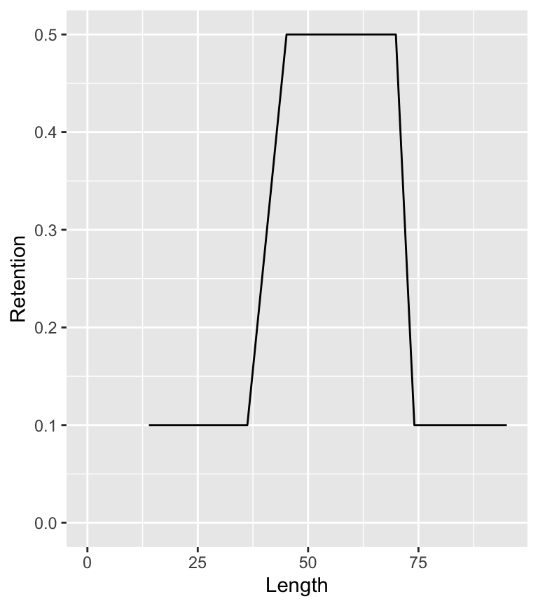
The number of recruits at the carrying capacity (\(R_\text{max}\)) is a scaling constant that only affects the estimate of the yield.
Before calculating the recruitment it is important to introduce the concept of the (unfished) survivorship (\(lx_a\)) which is the probability of a recruit surviving to age \(a\) in the absence of fish mortality.
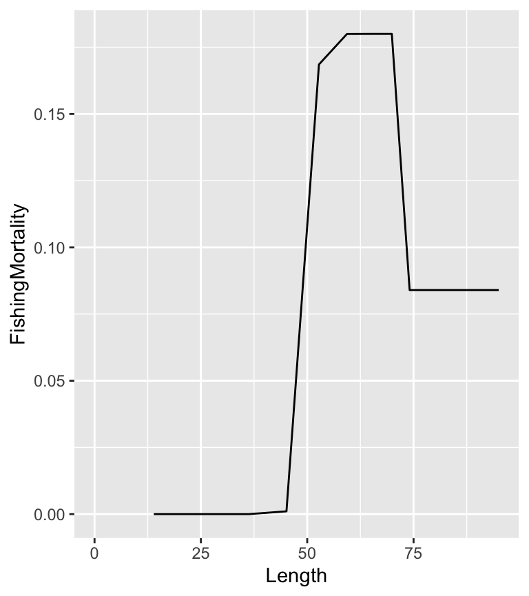
The unfished survivorship (\(lx_a\)) is defined recursively by
\[lx_{R_t} = 1, lx_a = lx_{a-1} \cdot (1-N_{a-1}) \;\text{for}\; a > R_t\] where \(N_a\) is the annual interval natural mortality at age \(a\).
And the fished survivorship (\(lx_a^F\)) is
\[lx_{R_t}^F = 1, lx_a^F = lx_{a-1}^F \cdot (1 - (1 - N_{a-1}) \cdot (1 - U_{a-1})) \;\text{for}\; a > R_t\]
The number of eggs deposited per (unfished) recruit (\(\phi\)) is then just
\[\phi = \sum_{a = R_t}^{t_\text{max}} lx_a \cdot F \cdot S/2\] where \(t_\text{max}\) is the maximum age considered (by default 20) and \(S\) is divided by two as the sex ratio is assumed to 1:1.
The fished equivalent is denoted \(\phi_F\).
By definition \[\alpha = \frac{R_k}{\phi}\]
The value of \(\beta\) for the Beverton-Holt curve can be found by rearranging the following formula where \(R_0\) is the number of recruits at the unfished equilibrium.
\[R_0 = \frac{\alpha \cdot \phi \cdot R_0}{\beta \cdot \phi \cdot R_0 + 1}\]
\[\beta \cdot \phi \cdot R_0 + 1 = \alpha \cdot \phi\]
\[\beta = \frac{\alpha \cdot \phi - 1}{\phi \cdot R_0}\]
The equivalent equation for the Ricker curve is arrived at as follows
\[R_0 = \alpha \cdot \phi \cdot R_0 \cdot \exp (-\beta \cdot \phi \cdot R_0)\]
\[\frac{1}{\exp (-\beta \cdot \phi \cdot R_0)} = \alpha \cdot \phi\]
\[\beta \cdot \phi \cdot R_0 = \log(\alpha \cdot \phi)\]
\[\beta = \frac{\log(\alpha \cdot \phi)}{\phi \cdot R_0}\]
The number of recruits at the fished equilibrium (\(R_{0F}\)) can then be found for the Beverton-Holt curve as follows
\[R_{0F} = \frac{\alpha \cdot \phi_F \cdot R_{0F}}{\beta \cdot \phi_F \cdot R_{0F} + 1}\]
\[\beta \cdot \phi_F \cdot R_{0F} + 1 = \alpha \cdot \phi_F\] \[R_{0F} = \frac{\alpha \cdot \phi_F - 1}{\beta \cdot \phi_F}\]
and for the Ricker
\[R_{0F} = \alpha \cdot \phi_F \cdot R_{0F} \cdot \exp (-\beta \cdot \phi_F \cdot R_{0F})\]
\[\frac{1}{\exp(-\beta \cdot \phi_F \cdot R_{0F})} = \alpha \cdot \phi_F\]
\[\beta \cdot \phi_F \cdot R_{0F} = \log(\alpha \cdot \phi_F)\]
\[R_{0F} = \frac{\log(\alpha \cdot \phi_F)}{\beta \cdot \phi_F}\]
Finally the estimates are rescaled so that the carrying capacity is identical to \(R_\text{max}\) through the following transformations
\[ \beta = \beta \cdot \kappa / R_\text{max} \] \[ R_0 = R_0 / \kappa \cdot R_\text{max} \] \[ R_{0F} = R_{0F} / \kappa \cdot R_\text{max} \]
where \(\kappa\), which is the carrying capacity in the original scale, is \(\alpha/\beta\) for the Beverton-Holt and \(\alpha/(\beta \cdot e)\) for the Ricker curve.
When the yield is simply the number of fish caught (irrespective of the weight or whether or not its harvested) then it is given by
\[Y = \sum_{a = R_t}^{t_\text{max}} R_{0F} \cdot lx_a^F \cdot \pi \cdot V_a\]
if only harvested fish are considered it becomes
\[Y = \sum_{a = R_t}^{t_\text{max}} R_{0F} \cdot lx_a^F \cdot \pi \cdot V_a \cdot R\]
and if the total weight (in kg) is important then its
\[Y = \sum_{a = R_t}^{t_\text{max}} R_{0F} \cdot lx_a^F \cdot \pi \cdot V_a \cdot R \cdot W_a/1000\]
and if only trophy fish are to be considered then its
\[Y = \sum_{a = R_t}^{t_\text{max}} \text{if}(La < L_y)\ 0\ \text{else}\ R_{0F} \cdot lx_a^F \cdot \pi \cdot V_a \cdot R \cdot W_a/1000\] where \(L_y\) is the minimum length of a trophy fish.
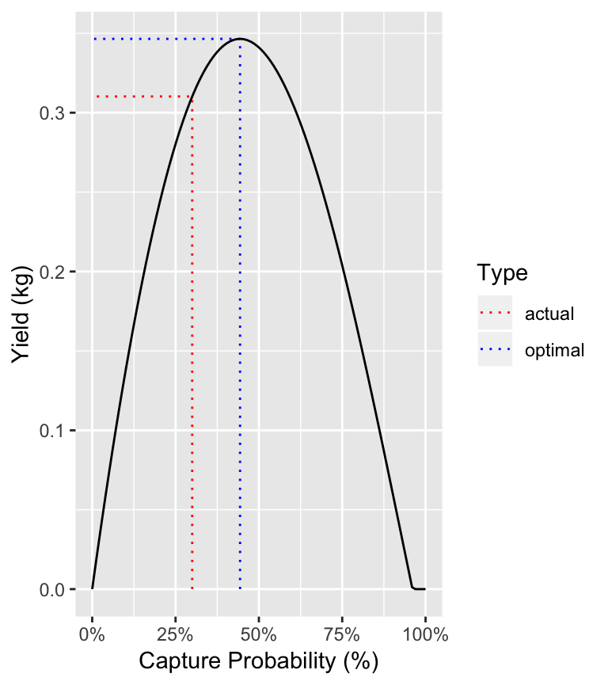